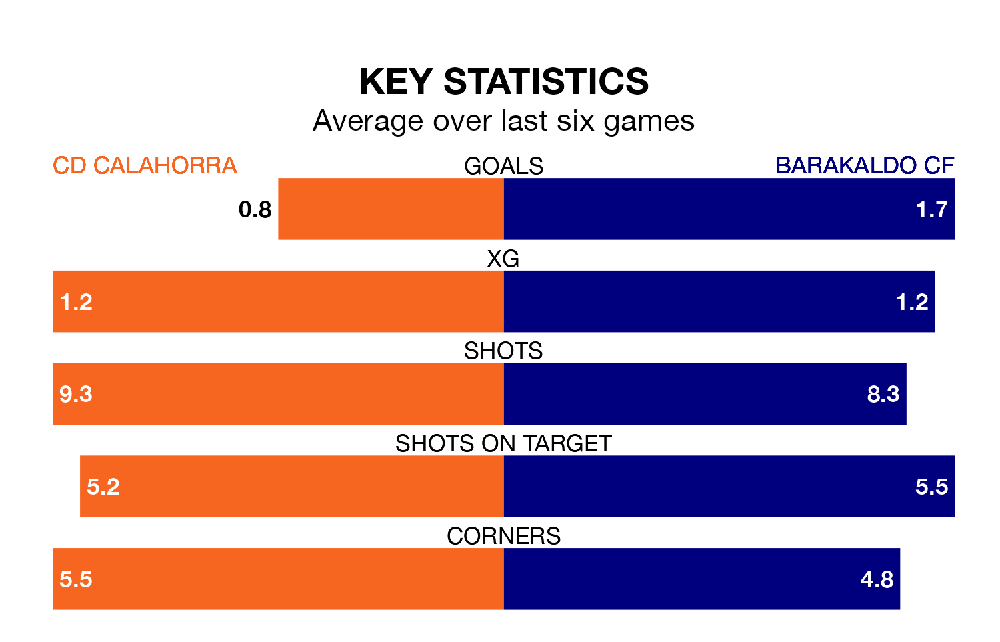

Barakaldo CF come to the Estadio La Planilla to play CD Calahorra on Sunday in excellent form, having collected 16 points from their last six games.
The visitors have won five and drawn one of their last six fixtures, while Calahorra have two wins and three draws.
Barakaldo are second in the table after 20 games, of which they have won 12 and drawn seven, earning 43 points.
Calahorra are nine places behind the away side in 11th, with seven wins and four draws putting them on 25 points.
With 31 goals in 20 games so far this season, Barakaldo are scoring more than average in the league with 1.6 goals per game. And they are conceding fewer than average, letting in 12 goals at a rate of 0.6 per game.
The hosts, meanwhile, are below average scorers, with 0.8 goals per game, compared to a league average of 1.1. They have conceded 1.0 goal per game.
In the last five years, Calahorra and Barakaldo have played each other on four occasions. Calahorra won one of them and they drew the other.
On average, Calahorra scored 1.8 goals and Barakaldo 1.5 in those matches.
Their last meeting was on September 24, when they played out a 1-1 draw.
Calahorra's last match was on January 27, a 1-0 win against Arenas de Getxo.
Barakaldo drew 1-1 with Utebo last time out, on Sunday.
Updated: 10:40 (UTC), 01/02/24